Женский состав команды
Наши спортсменки - гордость клуба и пример для подражания!
👩💼 Тренерский штаб
Фото игрока: Елена Иванова. Портрет для знакомства с составом ФК «Виктория».
Елена Иванова
Главный тренер
В команде с 2020 года Фото игрока: Анна Петрова. Портрет для знакомства с составом ФК «Виктория».
Фото игрока: Анна Петрова. Портрет для знакомства с составом ФК «Виктория».
Анна Петрова
Тренер вратарей
В команде с 2018 года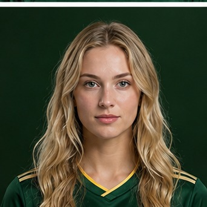
Фото игрока: Мария Сидорова. Портрет для знакомства с составом ФК «Виктория».Мария Сидорова
Ассистент тренера
В команде с 2021 года🧤 Вратари
 Фото игрока: Анна Соколова. Портрет для знакомства с составом ФК «Виктория».
Фото игрока: Анна Соколова. Портрет для знакомства с составом ФК «Виктория».
Анна Соколова
№1 - Вратарь
28 лет • 178 см
Основной составРеакция92%
Игра на выходах85%
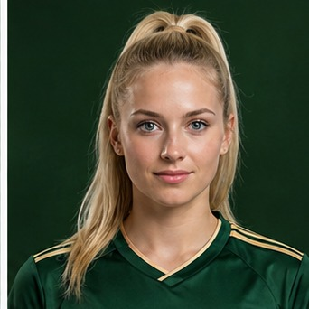
Фото игрока: Дарья Попова. Портрет для знакомства с составом ФК «Виктория».Дарья Попова
№12 - Вратарь
25 лет • 175 см
ЗапаснойРеакция78%
Игра на выходах82%
🛡️ Защитники
 Фото игрока: Екатерина Васильева. Портрет для знакомства с составом ФК «Виктория».
Фото игрока: Екатерина Васильева. Портрет для знакомства с составом ФК «Виктория».
Екатерина Васильева
№2 - Правый защитник
26 летОтбор88%
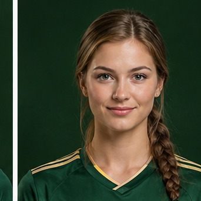
Фото игрока: Ольга Орлова. Портрет для знакомства с составом ФК «Виктория».Ольга Орлова
№3 - Центральный защитник
29 летСила94%
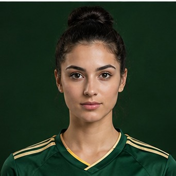
Фото игрока: Александра Новикова. Портрет для знакомства с составом ФК «Виктория».Александра Новикова
№4 - Центральный защитник
Вице-капитанЛидерство96%
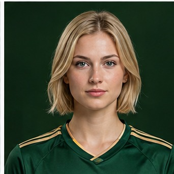
Фото игрока: Кристина Морозова. Портрет для знакомства с составом ФК «Виктория».Кристина Морозова
№5 - Левый защитник
24 годаСкорость89%
⚡ Полузащитники
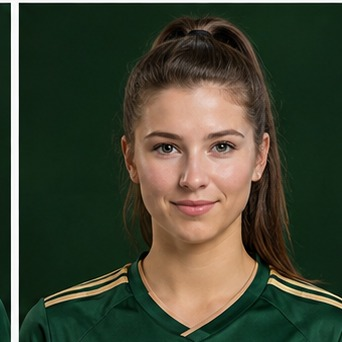
Фото игрока: Алина Семёнова. Портрет для знакомства с составом ФК «Виктория».Алина Семёнова
№6 - Центральный полузащитник
КапитанВидение поля95%
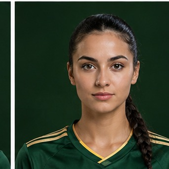
Фото игрока: Ирина Ковалёва. Портрет для знакомства с составом ФК «Виктория».Ирина Ковалёва
№7 - Правый полузащитник
27 летДриблинг87%
 Фото игрока: Наталья Фёдорова. Портрет для знакомства с составом ФК «Виктория».
Фото игрока: Наталья Фёдорова. Портрет для знакомства с составом ФК «Виктория».
Наталья Фёдорова
№8 - Опорный полузащитник
26 летВыносливость91%
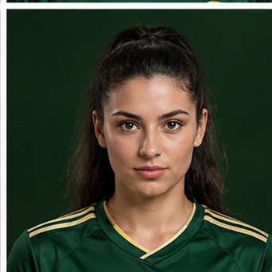
Фото игрока: Анжела Павлова. Портрет для знакомства с составом ФК «Виктория».Анжела Павлова
№10 - Атакующий полузащитник
ПлеймейкерКреативность93%
🎯 Нападающие
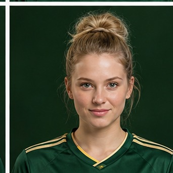
Фото игрока: Вероника Петрова. Портрет для знакомства с составом ФК «Виктория».Вероника Петрова
№9 - Центральный нападающий
Лучший бомбардирУдар96%
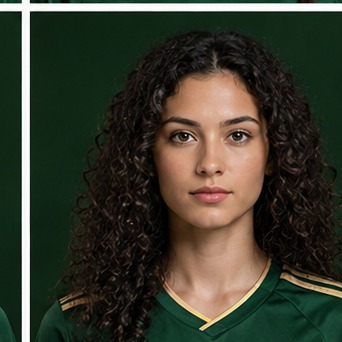
Фото игрока: Рената Жукова. Портрет для знакомства с составом ФК «Виктория».Рената Жукова
№11 - Крайний нападающий
29 летСкорость94%
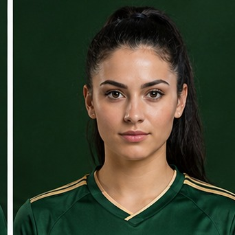
Фото игрока: Евгения Дмитриева. Портрет для знакомства с составом ФК «Виктория».Евгения Дмитриева
№19 - Нападающий
Молодой игрокПотенциал88%